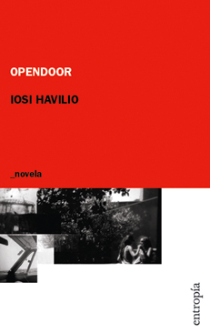
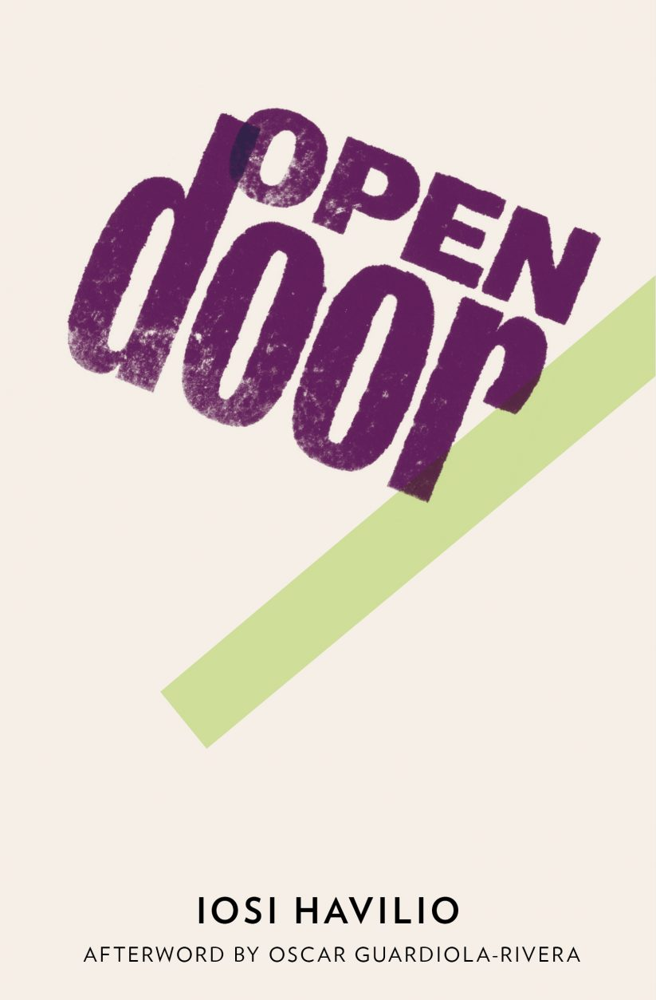
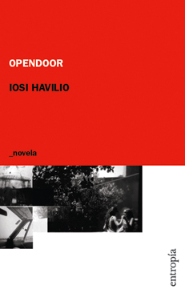
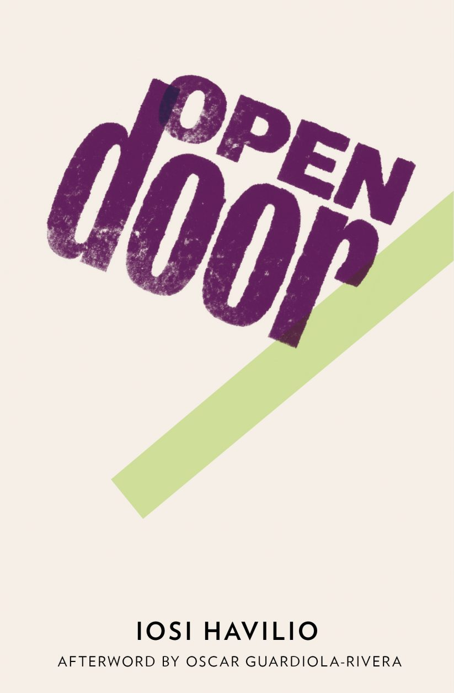
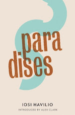
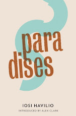

OPENDOOR
ENTROPÍA (2006)
LITERATURA RANDOM HOUSE (2021)
El desplazamiento entre la ciudad y el campo construye la dinámica de esta novela, una movilidad que transforma y amplifica los rasgos sensoriales en la voz de su protagonista: una joven estudiante de veterinaria, cuyo discurso a la vez indolente y desamparado enhebra una trama de sobrio desarrollo y exquisita resolución.
A partir del diagnóstico de un viejo caballo, en un campo cercano a la colonia psiquiátrica Open Door, la protagonista descubre un lugar de pertenencia, donde mitiga su falta de vínculos y la ausencia de su novia. Será el paisaje rural o pueblerino –pocas veces idealizado, siempre radicalmente concreto– el escenario donde el discurso interno que guía el relato sufrirá su evolución. El otro hemisferio será, entonces, la ciudad: el cada vez más lejano entramado urbano, ya sólo referencia tanática, a la que vuelve para toparse con una creciente vacuidad.
Opendoor crece, así, en un entorno argumental donde pasado y futuro ven velados sus contornos en favor de una actualidad marcada por el choque entre lo extraño y lo natural. Es ahí donde la prosa de Iosi Havilio encuentra su mejor tonalidad. Una escritura que puede maniobrar con destreza entre la mordacidad contenida y la ternura, el realismo y la abstracción, la precisión descriptiva y la solidez narrativa.
Prólogo a la edición 2021, Random House.
Por Albertina Carri
Leí Open Door hace diez años y todavía recuerdo la sensación de familiaridad que me provocó el universo de Havilio y su protagonista sin nombre. I am the man without name, dice Mel Gibson en la Mad Max en la que se bate a duelo con Tina Turner, luego de que una bomba haya hecho estallar al planeta. No quedó casi nada de lo que conocíamos. Ahora es desierto, arena y trueque. En esa tercera película de la saga ya no hay petróleo, es la caca de los cerdos la que mueve a lo que llaman civilización. Ese no name en medio del estiércol, se puede leer como un nosotras, como un aquellos, o como el significante de un apocalipsis. Las circunstancias que nos llevaron a todos, no a una, sino a todos, a dejarnos arrasar por la polvareda y la confusión. De la bomba o de la civilización, no es tan claro el camino como para diferenciarlas. Esa es la primera clave del enigma, el no nombre.
En ese pueblo que describe esta novela se me representaron muchos de los pueblos en los que viví en mi infancia y adolescencia y donde nunca faltó la historia de un loco suelto. Open Door, bien podría ser Carboni, La Riestra o Bellocq. Alguno de esos pueblos medio fantasmas, donde una estación de tren prescripta por el tiempo, es el centro neurálgico de la acción. Custodiada por la panadería, el Ramos generales y la carnicería, que funcionan desde muy temprano en la mañana y se apagan al mediodía, para volver a abrir sus puertas por apenas unas horas antes del atardecer. Con una estación de servicio, que es la única que aguanta la vigilia hasta la helada con la que la noche hace su salida, disputándose la banda sonora con alguna radio encendida, una moto lejana o perdida, y los ladridos de siempre. El del Diki, La Negra, El Chucho y Manucho. El Mentira por la pata corta, Mercurio por lo pesado y Tormenta porque es fea de día, pero peor de noche. No aparecen esos perros en la novela, pero podrían. Para mí que andan por ahí, circulando como fantasmas, que tampoco faltan a su cita. Aquella sensación de parentesco que me despertó esta novela, viene de esa influencia pueblerina y de un porteñismo fronterizo, siempre paria.
El modelo de manicomio a puertas abiertas que instauró Cabred a principios del siglo XX, dejó como secuela el mito de que puede andar un demente suelto cuando se camina por un campo de noche o de día, de la Provincia de Buenos Aires. A esas leyendas me retrotrajo opendoor. En minúscula, como lo ve escrito la protagonista la primera vez que el campo comienza a habitar su vida. En minúscula y todo junto, como si fuese una contraseña, una palabra clave para abrir algún portal y pasar al mundo de los extraterrestres que amenazan con descender en esas pampas, a través de su luz mala. Esa que no es más que el destello de la luna sobre las osamentas que median entre el cielo y la tierra.
Tal vez ese jeroglífico sea el aviso de que eso es algo más que un nombre, que ahí se esconde una trampa, y que una dirección y un nombre para alguien que no usa ninguno, pueden ser la clave para pasar a otra dimensión. La de un hombre de campo, taciturno y sin palabras. O para salirse de los criollismos literarios y perderse entre imaginarios menos canónicos. Como el de una Elvira Orphee descendida desde su montaraz bioma hacia estos llanos más parcos, pero enraizados a pura cal, piso de tierra y almacén con acumulación de variedades.
Open Door es el título de la novela y el nombre del pueblo, pero a su vez es una técnica. Una práctica que viene del estudio de la criminología y sus múltiples aliados, entre los que se encuentra su mejor amiga la psiquiatría. Un modelo exportado de Irlanda para que los enajenados no se enajenen tanto, y que entren y salgan de su confinamiento, y de la locura de perder a una novia, un domingo a la tarde sin explicación alguna. O del miedo que da ver caer un cuerpo, desde las entrañas oxidadas de un puente en desuso, a los impávidos vestigios de agua que quedan en el Riachuelo. El verde del campo, el amarillo de los ojos del caballo que tiene tumores en el ano y el negro de esa raja gelatinosa que divide a la provincia de la ciudad, se extravían contra el pálido de los cuerpos muertos que insisten con su no name.
Los NN también mueren y a la que se busca no se encuentra. Aunque a veces no se sabe ni qué se busca entre tanta pérdida y una bombacha blanca se presenta como un faro, y una siesta sosegada como la simiente de una parentela. Aunque no nos guste, las novias desaparecen, las bocas lo tragan todo y los caballos se mueren.
Más o menos así transcurre la historia y con un aparente paso tranquilo y sin grandes estridencias, vamos entrando y saliendo de una corbata ensombrecida, a unos dedos gruesos que solo expresan pasión cuando se aferran a un gatillo para acabar con una rata. Con prosa escueta y sobriedad narrativa, Havilio va desadjetivándolo todo y sin encandilarse por ninguno de los accidentes más o menos extravagantes que pueblan el relato. De gitanos, de fantasmas, de deleites orales y un juego de nombres e identificaciones que mensuran el territorio. Así nos va dando las claves para habitar ese destierro sin fronteras. Su apocalipsis no es histriónico, pero está en todos lados. En la huerta abandonada del loquero, en la biblioteca del pueblo donde le traducen algo de los fundamentos de aquel proyecto de Colonia Neuropsquiátrica a puertas abiertas, y en una ciudad de puerto que se enmarca a través de la morgue judicial y algunos departamentos, tan aciagos como sus habitantes.
Y el enajenamiento también está en todos lados. Todos los personajes lo padecen: porque se identifican con un caballo moribundo o con un perro de tres patas. Porque una pendeja turra te come tanto la concha como la cabeza, o porque tu hermano mellizo está fuera de sistema y tu sistema es una bataola de cadáveres y expedientes. Porque tu hermana está dispuesta a chuparte la pija y vos dispuesto a que eso suceda. Porque el deseo es irrefrenable a pesar de la apatía con la que se presenta la vida. Porque la keta enajena y el sexo enloquece. Porque no hay maternidad sin locura, ni silencio de campo sin extrañamiento, ni ríos mugrientos sin miedo, ni puentes que no den vértigo.
(…) todos los locos, en fila, listos para entrar en el catálogo, locos inventados, que son la gran mayoría, porque inventar locos es fácil, nadie se equivoca inventando locos, siempre puede ser. Havilio hace una apuesta fuerte por el sistema de puertas abiertas. Porque la vida enajena, parece decirnos esta novela, y para aprender a cruzar portales hay que saber leer algunas palabras claves, entregarse a las circunstancias y avisparse como lo hacen las pendejas.

 



ESTOCOLMO
CABALLO DE TROYA (2010)
LITERATURA RANDOM HOUSE (2018)
René espera que el avión despegue. Sentado en su butaca, siente los primeros indicios de pánico y se concentra en la respiración. El celular vibra. René duda tres veces hasta que decide escuchar el mensaje. Es Boris. La voz grave, rasposa, inconfundible, satura su oído: Te voy a matar, maricón de mierda... voy a arrancarte los ojos de la cara.
Estocolmo cuenta la historia de René, que en el 73 viaja a Suecia donde lo sorprende el golpe de Estado contra Salvador Allende. Desde entonces, lleva una vida de exilio, soledad y amores humillantes e infelices.
Huyendo de todo, René vuelve a Chile treinta y tres años más tarde. El regreso nunca es fácil y tendrá que enfrentarse a la vida que dejó atrás, pero también a la sombra hipnótica de Boris, su amante eslavo, que parece seguirlo a todas partes.
El sexo, la culpa, los miedos y la cobardía son las piezas esenciales con las que el relato se va construyendo. El lenguaje contenido e intenso, lacerante por momentos, hacen de Iosi Havilio uno de los escritores más interesantes de su generación.
PARAÍSOS
LITERATURA RANDOM HOUSE (2012)
CABALLO DE TROYA (2013)
«De la melancolía al paroxismo: en esta dirección se mueve Paraísos. Comienza con el velorio de un viejo en un pueblo de campo y crece hasta un robo ebrio y desbocado en Buenos Aires. La historia tiene una protagonista que cuenta la desolación y los highs de la droga como una experiencia neutra, sin acentos. Quienes leyeron Opendoor de Havilio encontrarán nuevamente a las dos mujeres enigmáticas de esa novela. Lejanas, una por su indiferente inercia, la otra por su desenfreno sin método. Pero ahora recorren otros mundos: un edificio tomado, la mansión de unos burgueses judíos, Plaza Italia, el zoológico, la costanera. Sin embargo, Paraísos no es una novela de climas urbanos. En el mundo de la más absoluta actualidad, la novela narra prescindiendo del costumbrismo.Todo pasa por la voz de la protagonista y todo se asordina. Pasión y pasividad. Havilio encontró el tono justo y el registro atenuado para contar lo extremo. Paraísos transcurre en una irresistible normalidad fantasmal.»
Beatriz Sarlo
«Iosi Havilio agarra con las manos cada una de las sentencias que se escriben para domesticar a la literatura y las rompe contra su rodilla, en sus novelas está el relato puro, la voz extraña, ese trabajo invisible y esencial que sólo producen los grandes escritores.»
Fabián Casas
 

LA SERENIDAD
ENTROPÍA (2014)
Este libro de Iosi Havilio encierra una desbocada fábula del yo. El peregrinar de un héroe que, para escapar de las humillaciones del presente, se enfrenta a las transfiguraciones míticas de su pasado. Se puede leer La Serenidad como un radical mapeo de los distintos registros de lo subjetivo, con una prosa que alterna con naturalidad y desparpajo entre lo real, lo imaginario y lo simbólico. Un relato donde los personajes, empezando por El Protagonista, se transforman en categorías abstractas; las ideas adquieren dimensiones épicas, y el absurdo se revela como ese abismo donde se diluyen los límites entre la percepción y la palabra.
«La Serenidad es una aventura que dura un día y cincuenta años: los tiempos de la novela, desde Tolstoi y Joyce. El ritmo es trepidante; las escenas, bellamente ejecutadas; las descripciones, lujosas; el lenguaje, plástico y armonioso. La Serenidad es el resultado de una feliz discusión de Havilio con los modos de novelar en el presente.»
Damián Ríos
PEQUEÑA FLOR
CABALLO DE TROYA (2010)
LITERATURA RANDOM HOUSE (2018)
"Esa tarde entendí que lo que creemos imposible suele estar a tres segundos de distancia."
Iosi Havilio ha escrito una novela magnífica e inesperada. Pequeña flor es un hipnótico y admirable único párrafo, consistente, adictivo, producto de la prosa de un autor talentoso e inquieto que se inclina por la búsqueda constante.
Un hecho fortuito y un matrimonio en plena meseta amorosa son los disparadores de una historia que no para de crecer, que sorprende a cada paso, hasta llegar al éxtasis, acaso recién, en su punto final.
PELÍCULA (2022)
Dirigida por Santiago Mitre y protagonizada por Daniel Hendler

JACKI O LA INTERNET PROFUNDA
SOCIOS FUNDADORES (2018)
«Jacki es una explosión de hablas argentinas, y no sólo argentinas y no sólo en español. Es un tour de force, de ahí sale un torbellino. Me gusta que el lenguaje no esté hecho para contar una historia, no esté sanitizado, sino que emerja de un presente en paños menores, donde los conocimientos son googleados y la tecnología es el punto de apoyo para la información y el pensamiento sostenido a lo largo de páginas que parecen más por la densidad de los apuntes. Me gusta que todo salga para afuera con la inmediatez sin censura de una conversación, tal un comentario sobre César Aira o una referencia al sangrado femenino, lecturas filosóficas o recuerdos de infancia, líneas de preocupación o deseo, el manga y los comics... Un mundo abierto y a la vez relativamente cerrado, en un mismo plano de igualdad sin jerarquías, parodiando el registro oral, incorporando anomalías porteñas de dicción, presidido por la nariz siempre creciente de un reinventado Pinocho.»
Roberto Echavarren
VUELTA Y VUELTA

LITERATURA RANDOM HOUSE (2019)
«Iosi Havilio es un escritor inclasificable y genial.»
Mónica Rossi
La nueva novela de Iosi Havilio es una historia sobre la búsqueda de sentido y también es una fábula realista. En medio del duelo por la muerte de su madre, una mujer muy especial cuya huella ha quedado marcada en sus hijos y en su arte, el autor y protagonista de esta ficción se embarca en una aventura extrema, que se inicia en la isla Martín García y lo llevará a conocer personas extraordinarias en un viaje tan alucinado como consciente. Con un trabajo singularísimo del lenguaje, aboliendo las normas, la narración se vuelve hipnótica y logra una atracción irreversible hacia su genial universo literario.
BUUUH!
ENTROPÍA (2023)
Buuuh! es, según dice el subtítulo de este libro, un diario de rodaje. Pero también se podría decir que son varios los diarios que encierran sus páginas. Hay uno que registra los días de una película que no se deja filmar, hay otro sobre el fin del mundo y otro más sobre el fin del amor; hay un diario que es sobre la escritura de un diario, y hay un diario sobre lo normal y lo paranormal, y sobre lo íntimo y lo sexual, y sobre la música y la botánica. Y también sobre cerdos asesinos y extraterrestres que toman Punta Indio. Hay un diario sobre cada cosa y todas confluyen en el vórtice de esta novela que todo lo fagocita, todo lo digiere, y lo devuelve mejor, más crudo, más hermoso, transformado en escritura.
Porque tenemos una certeza: alguien escribe mientras a su alrededor hay trípodes, mochilas, cámaras, un equipo de filmación, gente que duerme en contéiners. Y, a unos metros de esa gente –dice este libro en su vigésima sexta entrada–, hay africanos entusiastas que "demuelen una casa vieja. Construyen una casa nueva. Construyen y demuelen. ¿Demuelen o construyen?”. Se deja ver un método compositivo ahí. En ese afirmar y contradecirse, en la aserción y la pregunta, en refutar, poner en abismo, manifestar la incapacidad de decir y desarrollar enseguida una pulsión por decirlo todo, todo, en un diario de mil quinientas noventa entradas.